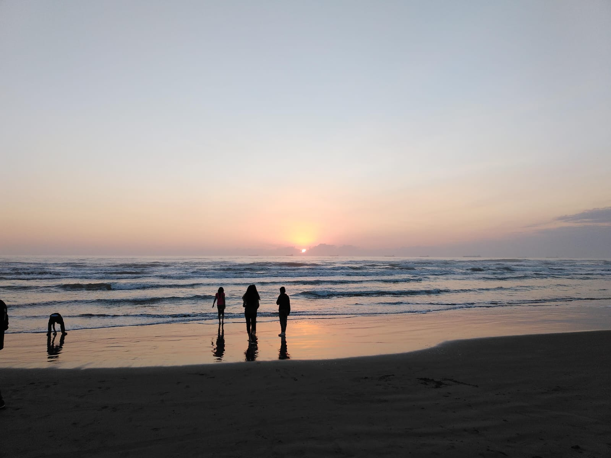

Light colored waves
A simple trip can turn into lifelong experiences
and the awakening of a new perspective.
Veracruz, the place where the conquistadors arrived
My journey began one night when I was looking at the stars in my backyard, so pale yet so dazzling after a while despite the light pollution from the city. After all, what else could I do if I had nothing to do during the holidays? Go on vacation? Although that should be the most normal thing in the world, I couldn’t afford it, so that had to be enough. Or at least, that’s what I thought until my aunt, who was on vacation in Veracruz, called me. She had taken my sister with her, and maybe, just maybe, she wanted me to join them. So, that same night, along with my other aunt and her family, I went on my first trip in my life: a trip to the beaches of Veracruz, but not only that, but also to the ranch where my grandmother had lived during her childhood.
There were the pastel waves, the sunrise seemed bathed in those beautiful coral colors that it looked like a mural painted by the greatest painters who could have ever existed. Each shade of orange, pink, and blue blending together in the infinite oil that is the sky. Looking from side to side, I noticed that this beautiful landscape seemed endless, and despite being infinitely beautiful, and feeling as if I had stepped into the very territories of the sky itself, I was filled with a sense of anguish as I felt so insignificant in the face of such beauty that it was almost impossible to process. It was simply overwhelming and at the same time encouraging, it was like being inside a painting by Monet.
Later, when leaving the beach and heading to the ranch, the road was something spectacular. I hadn’t started feeling the heat until the sunrise began, yet I remained stubborn and stayed in my usual clothes, my favorite clothes, the ones I always wear. The road was a bit tumultuous, with prolonged uphill and downhill stretches, but even so, it was an unparalleled spectacle as we moved forward and immersed ourselves in nature. The green began to surround us, and with the windows of the taxi we were traveling in, the air that entered became a breeze that completely refreshed us.
We arrived at our destination, and there was my aunt, my sister, and my grandmother with the rest of the family. They all gave us a warm welcome and invited us in. It certainly wasn’t a place with many amenities, but the kindness was never lacking. They invited us to eat and later took us to the river where we could swim for a while.
I remained just observing as others had fun. Honestly, I wasn’t fond of my body, but after a while of pleading from my family, I agreed to enter the river. At first, I was somewhat disgusted to go in because there were tadpoles swimming joyfully near the riverbank, but after a while… it got worse. For someone with a fear of germs, the simple act of touching the riverbed was more than challenging; it seemed like a task that made no sense and had no end, but after a while, it became a somewhat relaxing and enlightening experience. Even so, it’s not something I could say is for everyone.
At the end of the day, we went to the town center and finally, upon arriving at where we would stay, we made a bonfire. It wasn’t a wasted experience for my first trip.